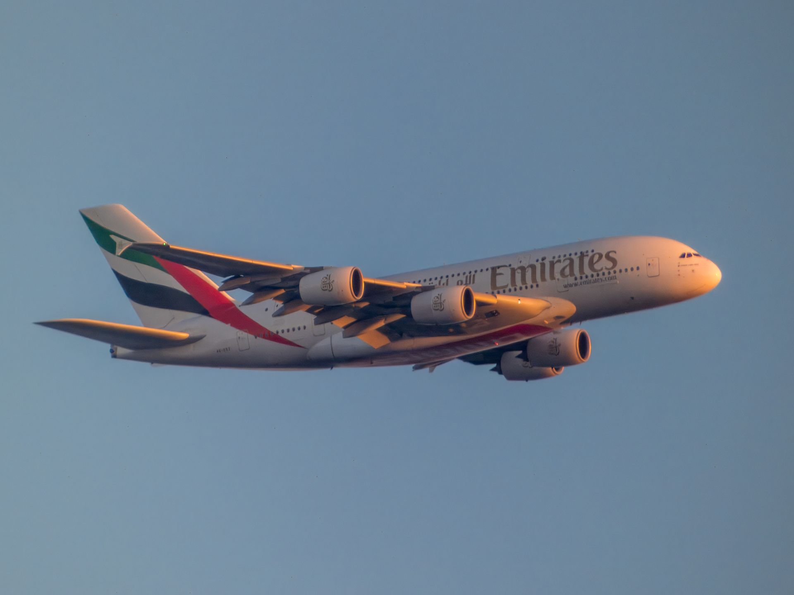
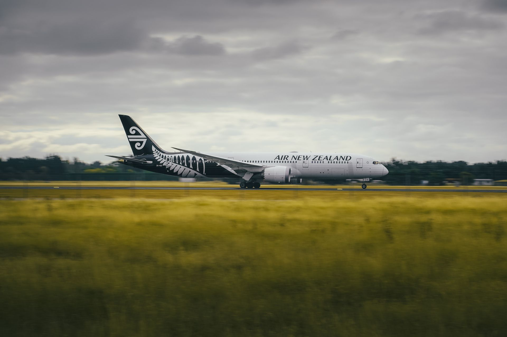
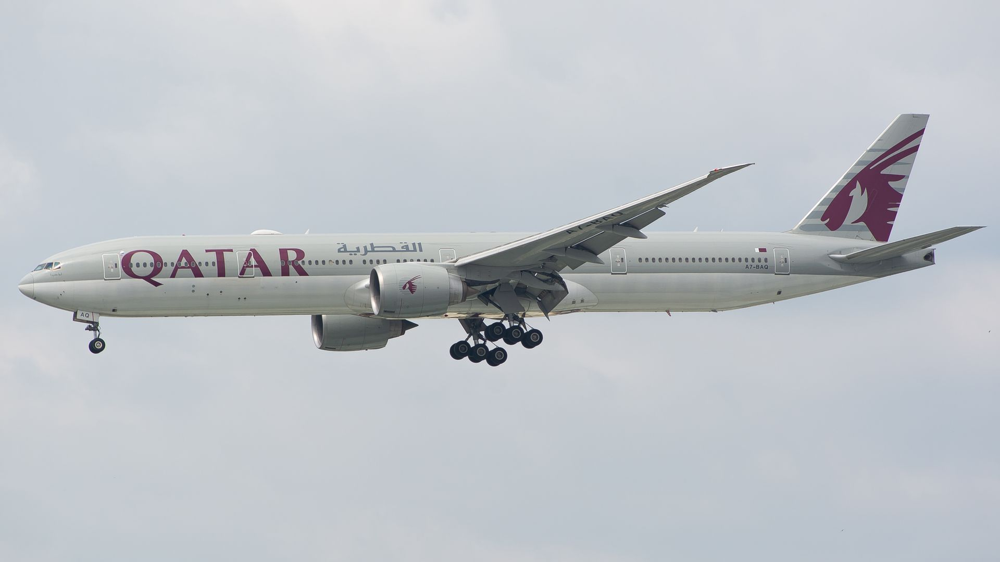
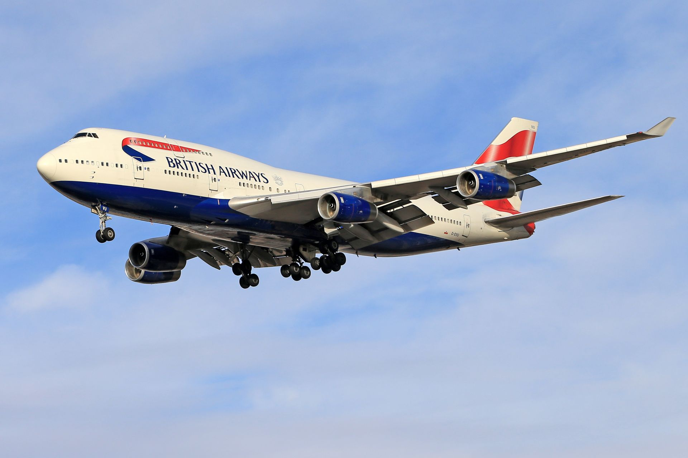
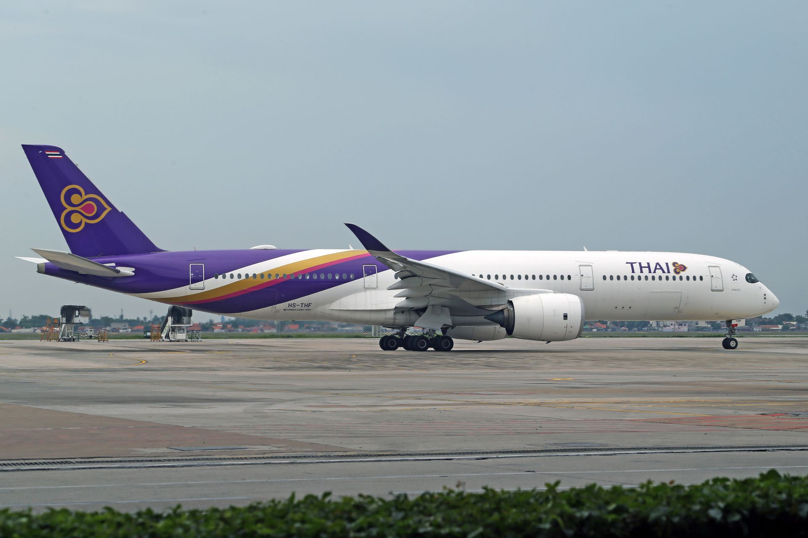

.jpg)




O Airbus A380 revolucionou a aviação comercial ao introduzir um design de dois andares completos, tornando-se o maior
avião de passageiros do mundo. Com capacidade para transportar centenas de pessoas com um nível inédito de conforto
— contando em algumas companhias com suítes de luxo, bares e lounges —, essa obra-prima da engenharia transformou as
rotas de alta densidade entre as maiores metrópoles globais e redefiniu a experiência de voar em grande escala.
No universo da aviação de carga, o Antonov An-225 Mriya ocupava um lugar absoluto de imponência como a maior
aeronave já construída na história. Equipado com seis potentes motores e um enorme sistema de pouso, o colosso
ucraniano foi projetado originalmente para transportar o ônibus espacial soviético Buran, mas ganhou fama mundial ao
carregar cargas superdimensionadas, equipamentos industriais pesados e missões humanitárias por todo o planeta.
Embora sua perda física tenha marcado tristemente a aviação moderna, o Mriya e o A380 permanecem eternizados como os
maiores símbolos da audácia humana em conquistar os céus.
O Boeing 747, carinhosamente apelidado de "Rainha dos Céus" (Queen of the Skies), é uma das aeronaves mais icônicas e revolucionárias da história da aviação civil. Lançado na década de 1970 com seu inconfundível formato de "corcunda" no convés superior, o modelo foi o primeiro jato comercial de fuselagem larga (widebody) do mundo, tornando as viagens internacionais de longa distância significativamente mais acessíveis e transformando o turismo global. Ao longo de mais de cinco décadas de produção, o 747 não apenas operou como gigante no transporte de passageiros e cargas, mas também se consolidou como símbolo cultural de inovação e engenharia, servindo inclusive como transporte oficial de chefes de Estado, como o Air Force One dos Estados Unidos.
O Boeing 777, popularmente conhecido como "Triple Seven", é um dos aviões comerciais widebody (corredor duplo) mais bem-sucedidos e emblemáticos da história da aviação continental e intercontinental. Reconhecido por ser a primeira aeronave comercial totalmente projetada por computador, o modelo destaca-se pela impressionante eficiência operacional, alcance de longo curso e pelos motores turbofan de grande porte — os maiores já instalados em um jato comercial. Combinando capacidade para centenas de passageiros, tecnologia de voo fly-by-wire de ponta e um padrão elevado de conforto a bordo, o 777 revolucionou as viagens de longa distância ao conectar continentes com alta confiabilidade e custos operacionais reduzidos para as companhias aéreas de todo o mundo.
O Boeing 787 Dreamliner é um dos bimotores de longo alcance mais avançados e eficientes do mundo, revolucionando a aviação comercial graças ao uso extensivo de materiais compostos em sua estrutura, o que reduz o peso da aeronave e o consumo de combustível. Projetado para transportar entre 200 e 350 passageiros, ele se destaca pelo conforto superior a bordo — incluindo janelas maiores, pressurização de cabine mais amigável e menor nível de ruído — além de conectar cidades distantes com rotas diretas que antes eram inviáveis para aeronaves desse porte.
O Airbus A350 é uma das aeronaves comerciais de longo alcance mais avançadas e eficientes do mundo, projetada para oferecer maior economia operacional e menor impacto ambiental. Construído com mais de 50% de materiais compósitos modernos, como fibra de carbono e ligas de titânio, o modelo reduz o consumo de combustível e as emissões de CO₂ em cerca de 25% em comparação com aviões de gerações anteriores. Além de seus motores Trent XWB de última geração, o A350 se destaca pelo elevado conforto oferecido aos passageiros, contando com uma cabine mais silenciosa, janelas mais amplas, controle de umidade otimizado e pressurização mais baixa que minimizam o cansaço e o jet lag em voos intercontinentais.